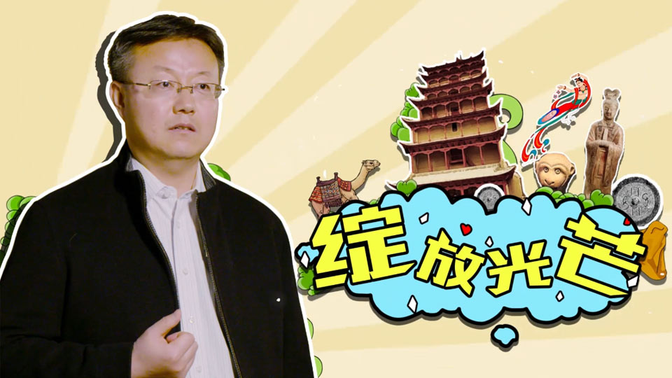

首页
关于华为
出版物
营赢
敦煌：丝路神韵袅千年，智慧旅游新体验
2018年04月25日
|
文/许胜蓝、薛桦
- 敦煌自古以来就是多民族、多文化交融互通之地，是丝绸之路上的咽喉锁钥。因为历史和大自然的
- 馈赠，敦煌的旅游资源非常丰富。敦煌市常住人口不到20万，但年接待游客人数超过900万人次，旅游
- 人数是常住人口的几十倍，这个比例即使在中国的热门旅游城市中也相当少有。以旅游业为主的第三产
- 业在全市国民经济中的占比接近60%，如何保证和提升游客体验是敦煌城市管理的头等大事。
- 不同于其它地方的智慧城市，其理念、模式侧重于城市管理和服务，敦煌智慧城市建设的核心是智
- 慧旅游。成立于2014年的敦煌智慧旅游有限责任公司（简称“敦煌智旅”），专门负责敦煌智慧城市的
- 建设运营，董事长孙晓强揭示了敦煌如何开拓出智慧旅游引领产业型智慧城市建设的创新模式。

用智慧旅游撬起智慧之城
- 敦煌智慧城市建设摆脱了“依靠政府、依靠财政”的老思路，探索出“公司化、社会化运营”的新
- 模式，积极引入社会资本，盘活城市资源。“做智慧城市一定要找个主攻方向。”孙晓强表示，通过主
- 攻方向以产业化和顶层设计把其他所有行业资源统一梳理、整合、共享。敦煌选择的主攻方向是智慧旅
- 游，“敦煌找到了一个支点，以智慧旅游撬起一座智慧之城。有了这套理念，我们就可以做到四两拨千
- 斤。”
- 去敦煌旅游的人都有这样的体会，除了能够感受到深厚的文化底蕴和奇特的自然风光外，还能感受
- 到旅游过程中的秩序井然和便捷服务。即使是在旅游旺季，体验到的也是美景，而非拥挤的人群。但对
- 敦煌城市管理者而言，旅游旺季时，大量客流对文物保护和游客安全提出了严峻挑战，淡季时则面临大
- 量旅游资源的浪费。
- 孙晓强表示，“所有ICT基础设施、营销体系，以及城市管理、公共安全、交通规划都要以智慧旅游
- 为‘发动机’进行推进。最终目标是实现游客智慧服务供给、景区智慧管理以及旅游目的地的全面营
- 销，推动丝绸之路旅游资源共享，以及区域经济的均衡发展，将公共服务扩展到整个智慧城市建设。”
- 这一系列的建设措施，使得敦煌在2016年11月的第六届全球智慧城市博览会上，荣获“智慧城市提
- 名奖”，并成为中国第一个在智慧城市领域获得该国际大奖的城市。这充分肯定了敦煌在智慧城市建设
- 以及推广丝绸之路旅游发展方面做出的重要贡献。全球智慧城市博览会是目前全世界规模最大的智慧城
- 市主题展会，由西班牙政府、世界银行等共同组织发起，在全世界享有极高的声誉。
智能新体验无处不在
- 敦煌智慧旅游新模式下，游客可线上预定各大景区门票，凭二维码快速进入景区。以鸣沙山月牙泉
- 景区为例，网络售票数达到总售票数的35%以上；云终端门禁系统让游客可以通过二维码、身份证、人
- 像、指纹等多种手段进出景区；指纹识别还实现了电子票务和一票多次入园的功能。这些数字化手段，
- 使得鸣沙山月牙泉景区2017年的游客接待数突破200万人，游客满意度超过96.5%。
- 敦煌还在旅游景区安装先进的综合视频报警系统和游客流量监控系统，逃票行为会被“电子桩”记
- 录并由门禁系统自动识别。视频监控系统能起到保护游客生命安全的作用，甚至可以及时发现中暑游
- 客，在夏季鸣沙山地表温度达60度的时候及时救助，实现“急救白金十分钟”。此外，景区的指纹录入
- 系统帮助有关部门完善本地居民和外来游客的指纹数据库，为当地安保工作提供支持。
- 敦煌已在市内43家酒店、大剧院、旅游景区等游客聚集区域实现了Wi-Fi全覆盖。孙晓强解
- 释，“我们按照游客停留十分钟为标准，进行Wi-Fi布点。游客进入敦煌之后，只需一次认证，Wi-Fi信
- 号一直跟随，极大提升了游客的线上体验。”由此，敦煌还推出了互动游览、手机客户端服务，为游客
- 提供景点介绍、电子地图、自主导览、语音讲解服务，实现了把“导游装进手机里”。景区虚拟全景展
- 示系统把名胜古迹虚拟化、数字化、网络化，方便游客更早、更快地了解景区。
- 大数据能力代表着城市的“智商”，是智慧旅游运营的关键。敦煌通过与华为合作建设大数据分析
- 平台，对各景区旅游资源实时管控，获取淡旺季游客特征模型，进行精准营销。通过数字渠道推送景区
- 相关旅游信息，能够提升淡季游客人数，优化游客特征模型，共享区域旅行数据信息，实现可持续发
- 展。
- 在鸣沙山月牙泉景区，大数据分析平台显示2017年4月19日起，游客人数突破3000人大关，比上一
- 年度提前34天，旅游旺季累计延长了112天。据此，大数据平台可以向游客更好地匹配周边旅游资源，
- 使阳关、玉门关、雅丹等敦煌西线景区在2017年接待游客数同比增长15.78%。
- 孙晓强说：“大数据平台显示，2017年敦煌团队旅游占比不到10%。进入敦煌的游客有90%是散
- 客，其中60%是自驾游。针对自驾游游客的特定需求，如车辆租赁、旅游产品打包、旅游景区自由组
- 合、落地即需服务、异地还车等相关数据的分析，我们得以提供更好的私人定制化服务，极大提升了游
- 客满意度。”
文化保护有了更多手段
- 众所周知，庞大且持续增长的客流量，令一些热门景区在文物保护、古建维护、游客安全等方面承
- 受着巨大压力。常用的解决方案是限制流量，这虽然能在一定程度上保护文化遗产，却会影响游客的旅
- 行体验。而科技手段的不断更新，为这种困境找到了出路。
- 敦煌对旅游资源的保护也实现了“智能化”，即采用无线传感器等网络技术，对莫高窟、玉门关、
- 汉长城等文化遗址遗存本体及外围风沙、水文、气象、病害等影响文物存续的因素，进行实时监测、预
- 警和管理，实现了对文物本体由抢救性保护到预防性保护的转变。
- 目前，敦煌已建成旅游大数据库，并全面共享，比如敦煌学研究论著、敦煌手稿文献、敦煌石窟内
- 容总录等23个数据库，收集到20多万篇相关资料，初步形成了集敦煌文化保护、研究、弘扬为一体的传
- 播体系。敦煌还建立了非遗数据库，对市域内53项非物质文化遗产名录体系、传承人体系、音像手稿资
- 料体系等进行了数字化。
- 以莫高窟为例，敦煌研究院对石窟进行了全面的数字化信息采集、加工和存储，将获得的数据和文
- 献数据汇集起来，构建多元化、智能化的石窟文物数字资源库，并通过互联网向全球推广。游客足不出
- 户就能在线感受到敦煌石窟的魅力，大大缓解了旺季游客剧增对莫高窟文物造成的压力。借助智慧管理
- 预约体系，莫高窟将从前一天两三万人的参观量减至六千，也减小了对壁画的不良影响。
- “对洞窟内湿度温度、二氧化碳浓度、游客数、交通接驳的密度等数据的监测，我们可以决定洞窟
- 开放时间和数量，这是对文化遗产的有效保护。”孙晓强说，“智慧敦煌所做的是有益的探索，也是伟
- 大的进步。”
搭平台，促产业发展
- 大数据平台是新型智慧城市建设的根本，其开放性和普适性在很大程度上决定了功能的创新性、应
- 用开发的效率等。与此同时，更加复杂、大数据量、时效性更高的分析功能，更复杂的管理需求，以及
- 智慧城市生态圈的整合等，也对平台的性能提出了更高的要求。孙晓强解释，“在选择设备厂商时，我
- 们首先考虑的是统一硬件标准和高可靠性，华为能满足我们的需求。在软件方面，我们认为应该是开放
- 的，智慧旅游和智慧城市是开放共享的生态体系。这与华为一直倡导的‘被集成’理念和打造合作共赢
- 的生态圈的想法不谋而合。”
- 依托华为云计算技术构建的飞天云数据中心，敦煌搭建了智慧敦煌统一基础平台，包括数据共享平
- 台、视频共享平台、地理信息平台、大数据分析平台，能够统一承载智慧旅游、智慧家庭、智慧交通、
- 政务服务等智慧应用，助力智慧敦煌的管理信息化、服务智能化、体验个性化。孙晓强指出，“通过生
- 态圈进一步推动产业规划，让智慧城市成为一个能够自我造血、自我演进的有机体。”
- 敦煌的智慧旅游辐射带动效益巨大，盘活了租车、酒店、土特产销售等市场，带动了本地第一、第
- 二产业的增收。孙晓强说，“智慧旅游让敦煌的所有元素活起来了，但还要走出去。未来要让敦煌的智
- 慧实践面向甘肃、面向丝路推广和复制。”
- “如果说智慧敦煌1.0是‘以智慧旅游引领产业型智慧城市’，智慧敦煌2.0将以‘文化敦煌’为核
- 心。”孙晓强解释，“游客来了，重大投资项目也随之而来，产业由此兴盛。在此之后，智慧敦煌的发
- 展潜力则是其深厚的文化底蕴。敦煌有人类文明基因库，基因库就可数据化，通过对数据进行整合、研
- 究、挖掘和加工，又将带动新一轮的创意、孵化、贸易、设计、加工、物流、金融、结算等产业发展。
- 智慧敦煌的品牌得以创造，标准得以缔造，发展潜力无穷无尽。”
更多文章